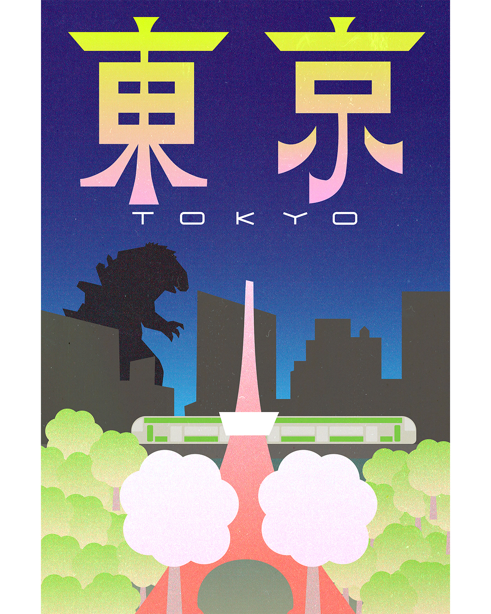
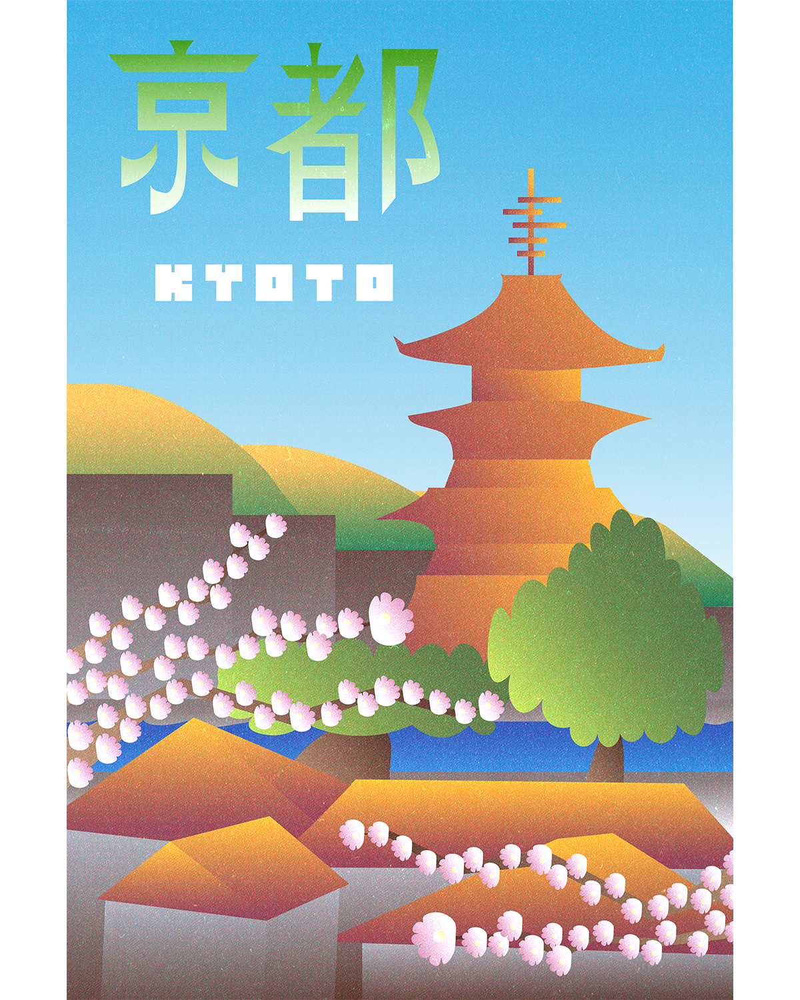
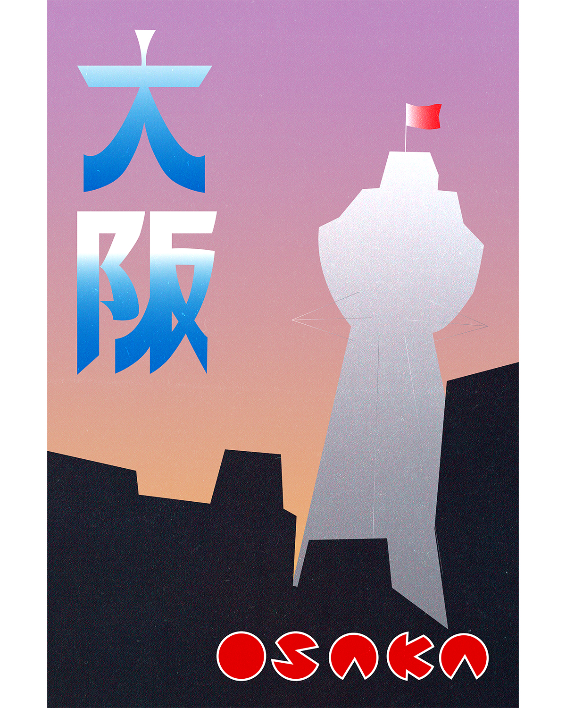

A poster series inspired by cities I visited across Japan. While travelling, friends introduced me to the fundamentals of kanji, prompting me to incorporate hand-drawn characters as the starting point for each composition. Each poster celebrates a city's atmosphere through its landmarks, typography, and colour.
Every poster is built around a single hand-drawn kanji that is digitized and paired with simplified architectural or cultural references. Instead of relying on complex illustration, I used gradients almost exclusively to recreate the luminous, energetic quality of Japan's urban environments.


